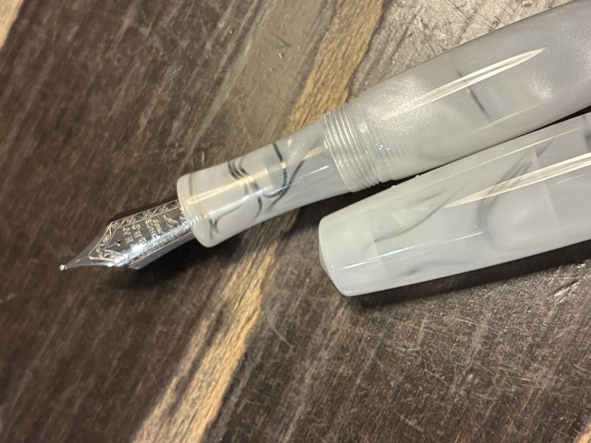

①
９本の万年筆の万年筆を小生は持っていたが，このたびまたもう一本入手してしまったので，ここで少し紹介する。
 写真：９本の万年筆（上から数えて２・３・４本目の三つは故障している。）
今回入手した万年筆は「PENBBS 323 クラウド」で， Etsy に出店している公式店から個人輸入した。
商品自体が US$15.99，送料が US$6.00で，合計3,800円弱を支払った。
適当に写真を撮ったので，まずはそれを載せよう。
写真：９本の万年筆（上から数えて２・３・４本目の三つは故障している。）
今回入手した万年筆は「PENBBS 323 クラウド」で， Etsy に出店している公式店から個人輸入した。
商品自体が US$15.99，送料が US$6.00で，合計3,800円弱を支払った。
適当に写真を撮ったので，まずはそれを載せよう。


 写真：PENBBS 323 クラウド本体と化粧箱
多くの PENBBS の万年筆と違って吸引機構を備えておらずコンバーター両用式となっているが，この万年筆の特色は軸の設計にあると思う。
通例，キャップと軸には金物のクリップやリングが備わっているが，この万年筆には一切そのような金物がなく，バレル型と表現される美しい設計が特徴だ。
あまりに丸いので，斜めった机に置くと転がっていってしまうだろう。
高品質なアクリル製で，注意深く成形されていて，キャップを閉める時の音や触感が心地よい。
分解してみると，捩子の箇所にOリングが添えられていることに気づく（三つ目の写真）。
市販のコンバーター両用式では見られないので，どういう意図の設計かは不明だ。
安直に考えると，インキ漏れがあった時の保険だと思うのが，もしかしたらアイドロッパー（軸の中に直接インキをいれること）としても使えるんじゃあないかとも思う。
もっとも，もしそうなら捩子とOリングの位置が逆じゃあありませんかね。
写真：PENBBS 323 クラウド本体と化粧箱
多くの PENBBS の万年筆と違って吸引機構を備えておらずコンバーター両用式となっているが，この万年筆の特色は軸の設計にあると思う。
通例，キャップと軸には金物のクリップやリングが備わっているが，この万年筆には一切そのような金物がなく，バレル型と表現される美しい設計が特徴だ。
あまりに丸いので，斜めった机に置くと転がっていってしまうだろう。
高品質なアクリル製で，注意深く成形されていて，キャップを閉める時の音や触感が心地よい。
分解してみると，捩子の箇所にOリングが添えられていることに気づく（三つ目の写真）。
市販のコンバーター両用式では見られないので，どういう意図の設計かは不明だ。
安直に考えると，インキ漏れがあった時の保険だと思うのが，もしかしたらアイドロッパー（軸の中に直接インキをいれること）としても使えるんじゃあないかとも思う。
もっとも，もしそうなら捩子とOリングの位置が逆じゃあありませんかね。
PNEBBS323 という型番の中でも，軸の模様によって値段が大きく異なり，このクラウドは最安の部類だ。
公式の写真を見て思うことは，この模様の特徴を捉えきれていないんじゃあないかということだ。
まさか虎目石のような光沢があるとは思わないだろう。
少々誇張気味に映像に収めた。
映像：クラウド模様の光沢
もしアイドロッパーとして運用できるなら，透明な流線形模様も入っているので，インキの色合いも楽しめると踏んでいる。